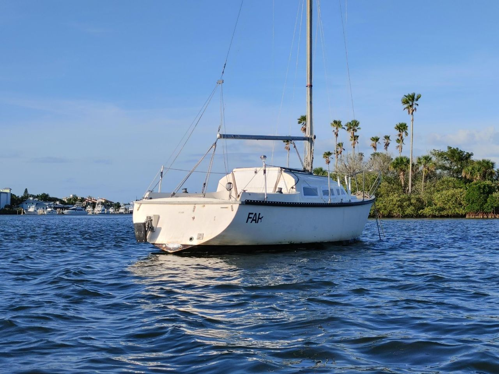
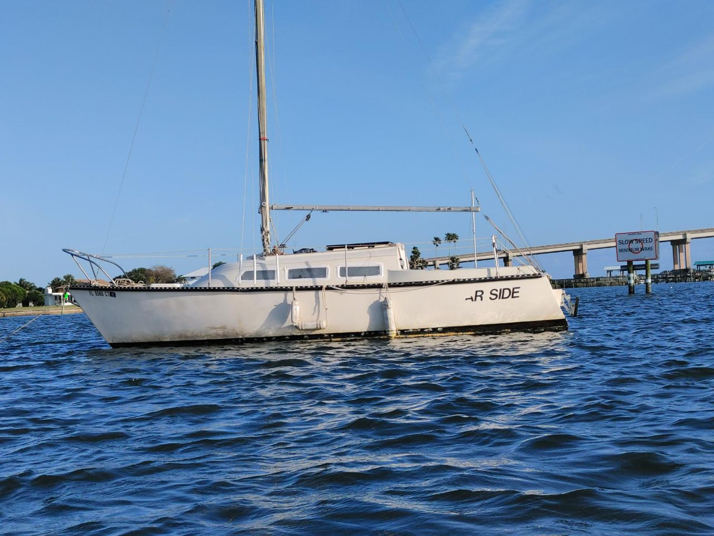

I've noticed this huge trend for everything to be heavily
commercialized. Somehow my health has been commercialized, my life
seems to exist so that other people can make money. I'm tired of
people putting a price on my head, on my abilities and my skills. I
want to live in a world where people do things because they want to
not because people are financially motivated to do them. I want to
see people explore passion, and love of the things they do. People
look for so much external motivation, but internal motivation always
creates better ideas. The world is losing its genuiness and honesty.
Everything points towards a job, a 9-5, a boring existence, when the
reality is the world is vast, beautiful and dangerous. The
reflections of our commercialized world are ugly, pollution is on
the rise, meanwhile honesty, no matter the pain it can cause always
ends up being a beautiful thing.
Rise above expectations. - ꦱꦶꦩꦺꦴꦤ
Phillip
Posted on
Dangers of Societal Living
Lately, the stress of living around many people has been so high.
Triple 7 Blessed as an organization, aims to free many people from
different issues costing them their freedom, and stress definetly
limits freedom significantly. Occupying the mind, stress is a shitty
form of slavery, effecting everyone no matter who they are or where
they were born. Surprisingly though, being stressed seems to be a
choice, not a necessity. Culture has pushed it on us that we need
to churn our time (and honestly our stress levels) into money for
the sake of society. Constantly, the world around us tries to think
for us, and choose what we're going to believe, but when you take
away the societal pressure, suddenly, one is able to come up with
ideas not based in the prejuidices of yesterday.
As I've personally tried to venture away, hell, run away,
from these ideas I was taught, that have no real firm reason to be
believed, I invite others to find them for themselves. Search for,
and find freedom through any means necassary because the alternative
is a world slowly killing itself. Slowly washing itself away,
burning itself from its own misdeeds. If we, as a human race, don't
get out of the way, it will destroy us in its path. Society is being
enslaved by the most greedy among us, turning us all into
$$$ Fiends, when in reality, we all die, we all can't take
this wealth with us. You can give it away when you die, but you can
keep nothing after this life. Only true freedom can be found in
working for yourself.
Keep searching for freedom, keep trying to liberate yourself, and
research. You'll escape this too. True nirvana is freedom in this
lifetime. - ꦱꦶꦩꦺꦴꦤ
Phillip
Posted on
Preparing to Move to Daytona


Triple 7 Blessed has a big announcement to make, we are moving to
the Daytona Beach area! Don Smón's father is sick and they just want
to go home to help take care of their family and to start a new
chapter in their life. Things are going to be interesting, we are
focused on saving up for more equipment and a space to produce our
music/art. Triple 7 Blessed is pretty new still, so a lot of people
don't know but it was originally started as a avenue to promote
local Twin Cities artists, and as the only artists that work under
the studio are moving to Florida, we will probably aim to promote
local Florida artists through Triple 7 Blessed but with
collaborative and stylistic elements from the Twin Cities. Triple 7
Blessed will be a love story written by Daytona for the Twin Cities
area. 777 Don Smón and 777 Conflicted Angel excited to see where
this move will take us. We can't wait to release more projects and
art for everyone to see the beauty of being human, imperfect and
looking towards better things. We love all of you so much, please
stay in touch and reach out whenever, all of you in my Kingdom.
We're aiming to go in a few months, so there's still time to do
stuff with us before we leave! 777 Don Smón has been working on some
drawings in the Tired
Visuals series, while 777 Conflicted Angel has been working
on designs for new clothes. New music is in the works, but no
spoilers can be given. We can't wait to show you all, and the world
the art we've been working on. Much love to all the fans.